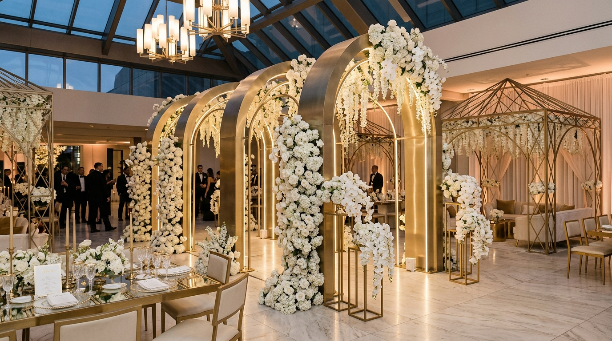
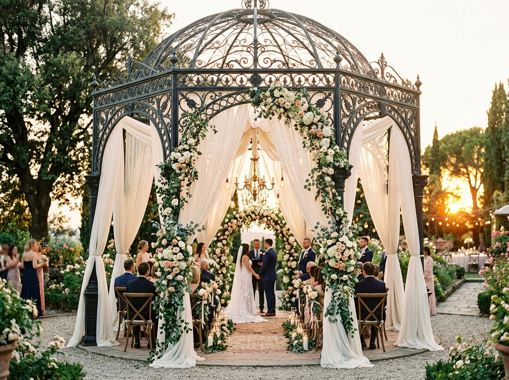

Peças que dão forma a grandes projetos.
Mobiliários e estruturas desenvolvidos para quem transforma espaços em grandes celebrações. Soluções industriais com acabamento de alto padrão pensadas para valorizar e renovar o seu acervo.

Da nossa fábrica para o seu acervo.
Há mais de 40 anos, a Baytaka desenvolve mobiliários, estruturas e peças para profissionais que vivem de criar grandes eventos.
Nossos produtos são pensados desde o primeiro traço para unir design contemporâneo, versatilidade de aplicação, acabamento milimétrico em pintura eletrostática e novas possibilidades para cada projeto de casamento, formatura ou evento corporativo.
Precisão Fabril
Corte a laser milimétrico, conformação CNC e soldagem TIG que resistem a centenas de montagens de eventos.
Pintura Eletrostática
Polimerização em estufa a 200°C: blindagem ultrarresistente contra arranhões, umidade e maresia.
Engenharia Modular
Estruturas inteligentes, desmontáveis e empilháveis pensadas para o transporte ágil das locadoras.
Presença Nacional
Expedição segura e frota integrada abastecendo acervos em todos os estados do Brasil.
Tudo para ampliar o seu acervo.
Explore nossa linha completa de estruturas modulares e mobiliários de alta resistência projetados para enriquecer suas composições cenográficas.

Seu acervo precisa acompanhar sua criatividade.
Para quem trabalha com eventos, escolher uma peça vai muito além da estética. Uma boa escolha amplia as possibilidades do acervo, atende diferentes propostas e permite criar novas composições em cada projeto — gerando maior retorno sobre o investimento e encantando seus clientes a cada celebração.
Encontre Peças para o seu AcervoPeças que estão ganhando novos projetos.
Mobiliários e estruturas que são referências absolutas entre os decoradores e locadoras mais conceituados do Brasil.
Uma peça. Diferentes maneiras de criar.
Veja como profissionais de renome transformam estruturas Baytaka em cenários inesquecíveis para as mais diversas comemorações.
Da nossa fábrica para projetos por todo o Brasil.
Mais de 10.000 eventos realizados com peças Baytaka em capitais e cidades de todos os estados brasileiros.
💡 Clique em um estado no mapa para ver cases e depoimentos da região.
A qualidade começa muito antes do evento.
Por trás de cada peça Baytaka existe um processo pensado para entregar qualidade, acabamento e produtos preparados para acompanhar a rotina intensa de montadores e decoradores.
Corte & Conformação
Tubos de aço carbono calibrados e dobrados em máquinas CNC com raio de curvatura preciso e sem deformações.
Soldagem TIG & MIG
Juntas soldadas artesanalmente com lixamento fino, garantindo união imperceptível e máxima resistência mecânica.
Pintura Eletrostática
Polimerização em estufa a 200°C com pó termoendurecível: acabamentos em ouro acetinado, preto fosco nobre e champanhe.
Expedição Protegida
Embalagem técnica com manta espumada, papelão kraft e plástico bolha duplo protegendo cada quina no frete rodoviário.
Gostou do que viu?
Conheça o nosso portfólio completo com mais de 350 itens, especificações técnicas detalhadas e encontre novas peças para ampliar o seu acervo.